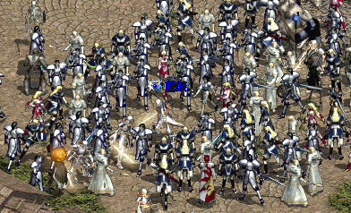

|
2003年2月14日
藍燄成為香港伺服器首名死騎王族

來自殘兵血盟，香港伺服器首名50級王族藍燄，經過多個月來的苦練，終於成為香港伺服器首名死騎王族了！
多羅皮帶載重測試
鳴謝玩家KnightII借出多羅皮帶作為測試之用。
最近香港開放了遺忘之島，島上的多羅會掉多羅皮帶（0防，皮製，重50，王族、騎士及妖精可用，沒有負作用），究竟多羅皮帶與歐吉皮帶相差多遠呢？
13力18體角色的原先載重上限為2400，在穿著多羅皮帶後為2880。
11力18體角色的原先載重上限為2250，在穿著多羅皮帶後為2700。
(2880 - 2400) / 2400 = 0.2
(2700 - 2250) / 2250 = 0.2
因此，多羅皮帶會增加載重上限20%，假如原載重上限為3000，在穿著多羅皮帶後則是3000
* 1.2 = 3600，而歐吉皮帶則會增加載重上限40%。（歐吉皮帶測試）
|